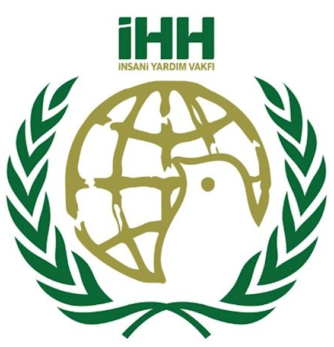

🤠Güçlü Ortaklıklarla Daha Fazlasını Başarıyoruz
Umudun filizlendiği her yerde biz varız — çünkü yalnız değiliz. Yurt içi ve yurt dışındaki güvenilir partnerlerimizle el ele vererek, kriz bölgelerine yardım ulaştırıyor, kalıcı çözümler üretiyoruz.

Ummah Welfare Trust
Uluslararası insani yardım ortağımız. Su, gıda ve sağlık desteği sağlıyoruz.
Diyanet
Türkiye ve Suriye’deki yerel organizasyonlarla sahada koordineli çalışıyoruz.

Yerel Sivil Toplum Kuruluşları
Projelerde Ortaklık Yürüttüğümüz Diğer Kuruluşlar.